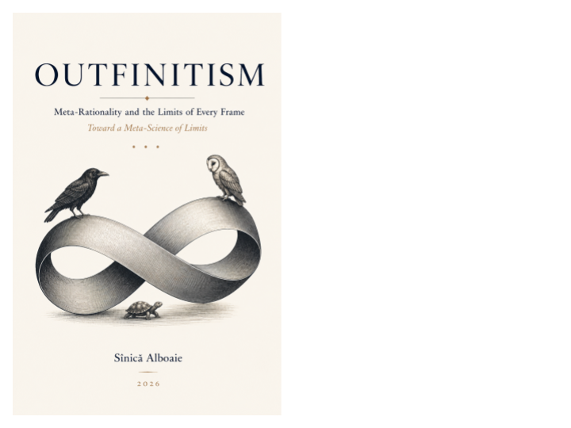

Outfinitist Philosophy · Axiologic Research Editions
Outfinitism
Meta-Rationality and the Limits of Finite Human Reason
The philosophical starting point of the collection: a practice of keeping human models, institutions and ambitions open to criticism, revision and further possibility.
A philosophy of open ends
Outfinitism begins with the limits of finite human reason. It treats no model, authority or present success as entitled to close the future. Its concern is not certainty, but the conditions in which beliefs and institutions can remain corrigible.
This book introduces the perspective from which the other volumes can be read: freedom, power, culture and technology matter because they can either preserve or shrink the space for criticism and renewal.
The task is not to possess the final view, but to keep the conditions of revision alive.